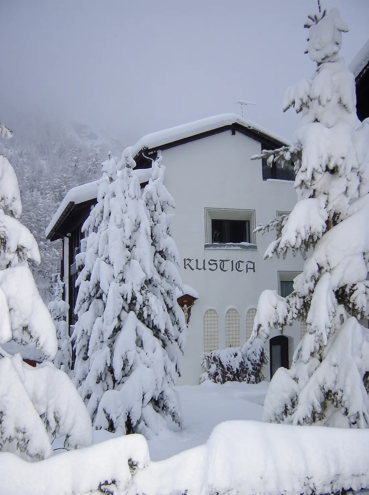
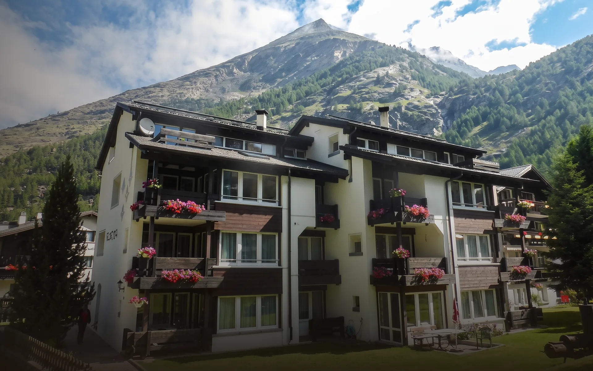
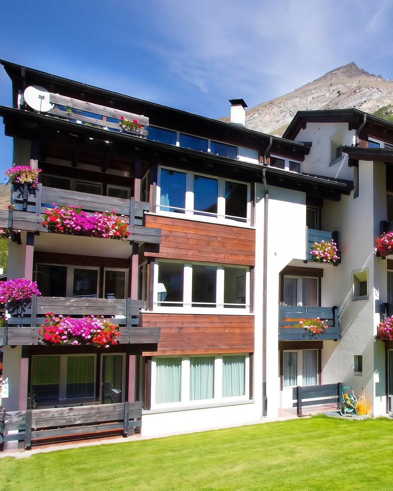
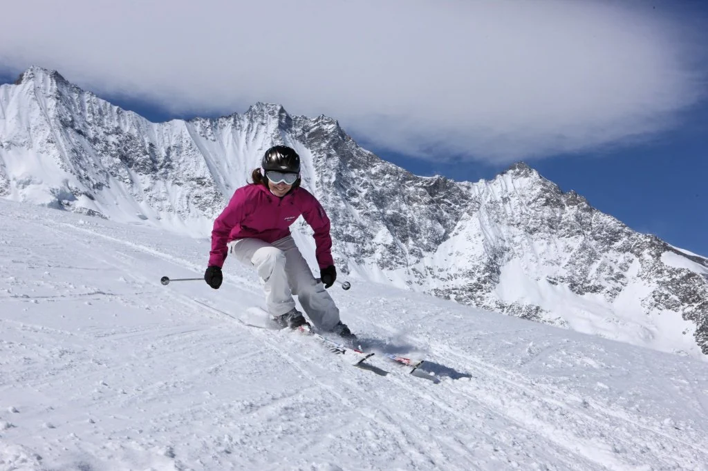
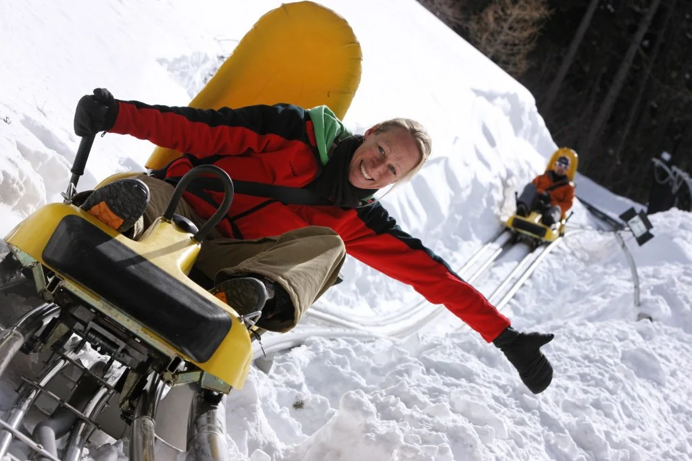

Im Dorf
- Bushaltestelle, 100 Meter
- Einkaufsläden und Lebensmittel
- Post
- Tourismusbüro



Ein Mehrfamilienhaus mitten im Dorf, in sehr ruhiger Lage, mit freier Sicht nach Süden.
Chalet Rustica · Saas-Almagell
Ein rustikaler Neubau mit drei Sternen auf der Westseite des Dorfes. Zwei Wohnungen liegen im Erdgeschoss mit eigener Liegewiese, die dritte im ersten Stock, neu renoviert. Das ganze Haus ist Nichtraucherhaus.


Ihre Gastgeber
Heidi und Damian Andenmatten-Zurbriggen führen das Chalet Rustica und laden Sie ein, einen Blick hineinzuwerfen: in die drei Wohnungen, ins Tal und in Heidis Geschichte.
Heidi kennen viele aus dem Weltcup. Heute massiert sie in ihrer eigenen Praxis im Dorf.
Was Sie in den Ferien brauchen, liegt zwei bis zehn Minuten vom Chalet Rustica entfernt.
Im Dorf

Zum Sport

Für Kinder
Im Winter
Heizung, Warmwasser und Strom sind im Preis inbegriffen. Die Skilifte erreichen Sie in fünf Minuten zu Fuss, die Langlaufloipe liegt ganz in der Nähe.
Hier können Sie mit der Familie Andenmatten-Zurbriggen Kontakt aufnehmen.